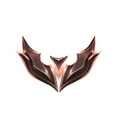
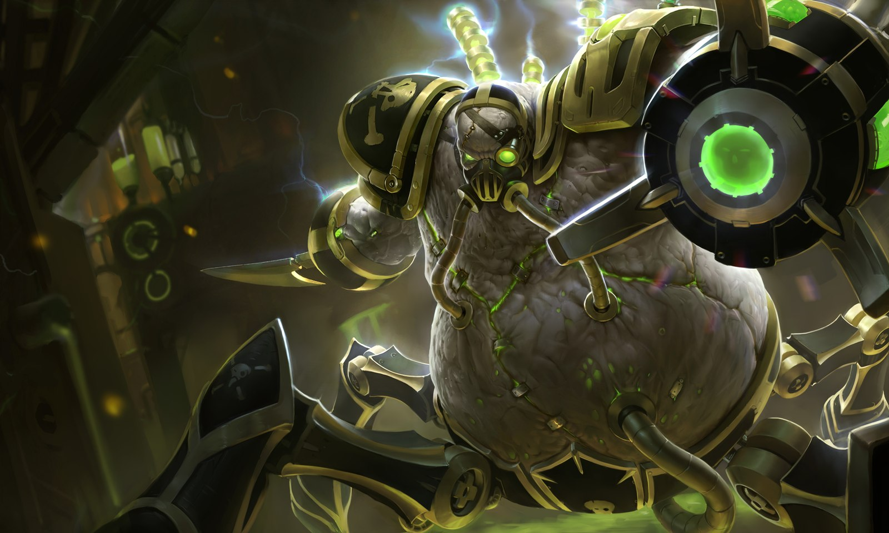
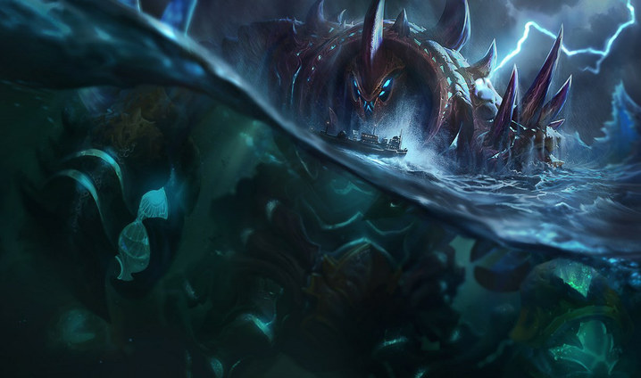
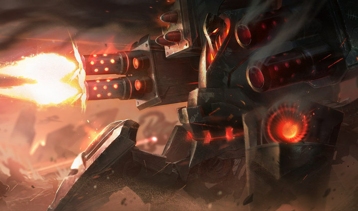
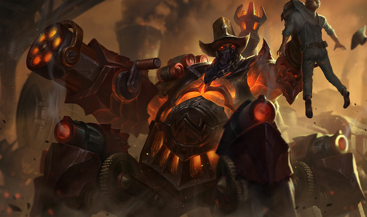
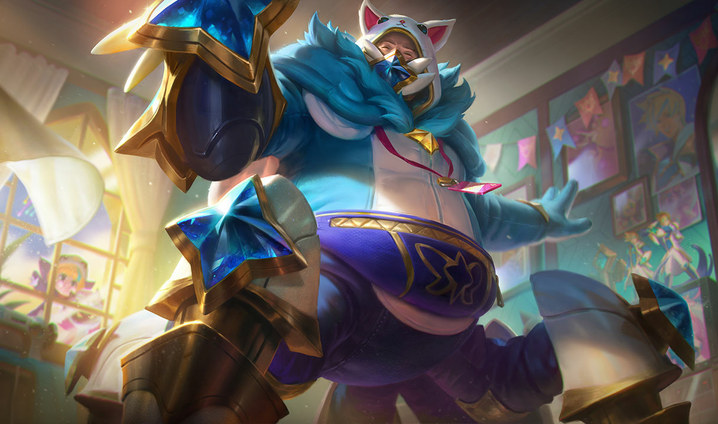
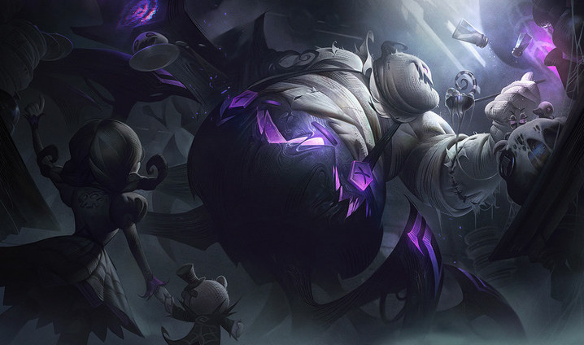
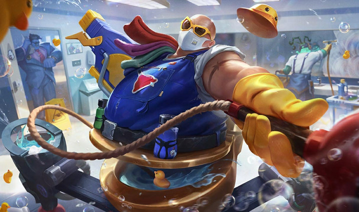
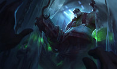

Cumplelolero · 24 ago 2010 — 2026
URGOT
16 AÑOS
El Temerario
Toplaner · Juggernaut · Noxus → Zaun
El one trick #1 del mundo
VOJA MAHER
#EUNE
Europa · nivel de invocador 1 659
(Dr. Mundo · 158 423)
S2026
Plata 2
S2025
Plata 4

S2024 S3 Bronce 1
S2024 S2
Plata 4
S2024 S1
Bronce 2
S2023 S2
Oro 4
50 %
winrate · 811V – 826D
PLATA 2
rango actual · 44 LP
Casi el doble de puntos que el OTP de Ornn… y cuatro rangos más abajo.
El punto de todo esto
El rework
que lo salvó

→

7.15
Parche del 26 de julio de 2017
VGU
Rehecho completo: kit, visuales, voz e historia
#1
Máxima prioridad de actualización entre todos los campeones
Salió convertido en una bestia de toplane con escopetas en las rodillas.
Las skins
6 skins en 16 años

Crabgot
ago 2010

Blindaje Bélico
mar 2012

El Forajido
ago 2018

Guardiana Estelar
abr 2020

Noche de Terror
sep 2022

Don Plomerone
abr 2025
6½ AÑOS
sin una sola skin (2012 → 2018)…
y la sequía terminó un año después del rework
y la sequía terminó un año después del rework
~56 USD
las seis · 7 270 RP
3,5
días de salario mínimo

La séptima, Carnicero, salió el mismo día que él — pero vive en la Bóveda Heredada y ya no se puede comprar.
El lore

El verdugo acabó
del lado del condenado
1
Era el verdugo de Noxus: mataba en nombre del imperio
2
Swain lo mandó a Zaun a una misión que era una trampa
3
Acabó encadenado en la Draga, la mina-prisión del fondo de Zaun
4
La alcaidesa Voss prometía libertad a cambio de confesiones… y los mataba igual